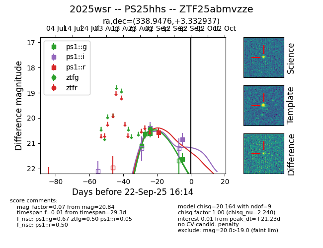
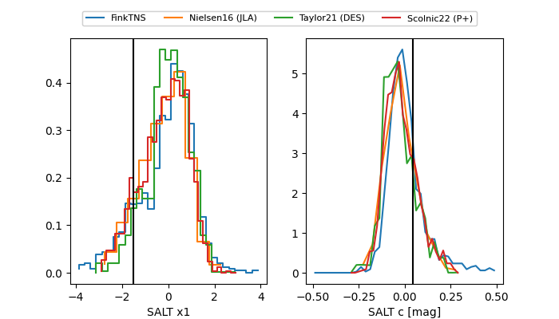

FINK: ZTF25abmvzze
Lasair: ZTF25abmvzze
ALeRCE: ZTF25abmvzze
TNS: 2025wsr
YSE: 2025wsr
ZTF25abmvzze (ztf,fink)
2025wsr (tns,yse)
PS25hhs (panstarrs)
equatorial (ra, dec) = (338.9476,+3.33294)
galactic (l, b) = (70.5702,-45.30318)


last ps1::g=21.63, ps1::i=20.84, ps1::r=20.57, ztfg=20.43
4 ps1::g, 2 ps1::i, 1 ps1::r, 1 ztfg detections